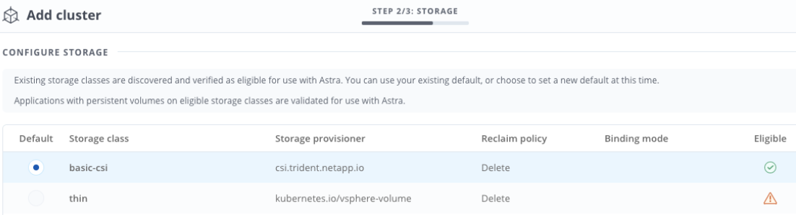

Richiedi modifiche alla documentazione
Richiedi modifiche alla documentazione Modifica questa pagina
Modifica questa pagina Scopri come collaborare
Scopri come collaborareConfigurare Astra Control Center
Collaboratori
Il centro di controllo Astra supporta e monitora l’archivio dati ONTAP e Astra come back-end dello storage. Dopo aver installato Astra Control Center, aver effettuato l’accesso all’interfaccia utente e aver modificato la password, sarà necessario impostare una licenza, aggiungere cluster, gestire lo storage e aggiungere bucket.
Aggiungere una licenza per Astra Control Center
È possibile aggiungere una nuova licenza utilizzando l’interfaccia utente o. "API" Per ottenere la funzionalità completa di Astra Control Center. Senza una licenza, l’utilizzo di Astra Control Center è limitato alla gestione degli utenti e all’aggiunta di nuovi cluster.
Per ulteriori informazioni sul calcolo delle licenze, vedere "Licensing".

|
Per aggiornare una licenza di valutazione o una licenza completa, vedere "Aggiornare una licenza esistente". |
Le licenze di Astra Control Center misurano le risorse della CPU utilizzando le unità CPU di Kubernetes. La licenza deve tenere conto delle risorse CPU assegnate ai nodi di lavoro di tutti i cluster Kubernetes gestiti. Prima di aggiungere una licenza, è necessario ottenere il file di licenza (NLF) da "Sito di supporto NetApp".
Puoi anche provare Astra Control Center con una licenza di valutazione, che ti consente di utilizzare Astra Control Center per 90 giorni dalla data di download della licenza. Puoi iscriverti per una prova gratuita registrandoti "qui".
|
|
Se l’installazione supera il numero concesso in licenza di unità CPU, Astra Control Center impedisce la gestione di nuove applicazioni. Quando viene superata la capacità, viene visualizzato un avviso. |
Quando si scarica Astra Control Center da "Sito di supporto NetApp", Inoltre, è stato scaricato il file di licenza NetApp (NLF). Assicurarsi di avere accesso a questo file di licenza.
-
Accedere all’interfaccia utente di Astra Control Center.
-
Selezionare account > licenza.
-
Selezionare Aggiungi licenza.
-
Individuare il file di licenza (NLF) scaricato.
-
Selezionare Aggiungi licenza.
La pagina account > licenza visualizza le informazioni sulla licenza, la data di scadenza, il numero di serie della licenza, l’ID account e le unità CPU utilizzate.
|
|
Se si dispone di una licenza di valutazione, assicurarsi di memorizzare l’ID account per evitare la perdita di dati in caso di guasto di Astra Control Center se non si inviano ASUP. |
Aggiungere il cluster
Per iniziare a gestire le tue applicazioni, Aggiungi un cluster Kubernetes e gestilo come risorsa di calcolo. Devi aggiungere un cluster per Astra Control Center per scoprire le tue applicazioni Kubernetes. Per Astra Data Store, si desidera aggiungere il cluster di applicazioni Kubernetes che contiene applicazioni che utilizzano volumi forniti da Astra Data Store.

|
Si consiglia ad Astra Control Center di gestire il cluster su cui viene implementato prima di aggiungere altri cluster ad Astra Control Center da gestire. La gestione del cluster iniziale è necessaria per inviare i dati Kublemetrics e i dati associati al cluster per metriche e troubleshooting. È possibile utilizzare la funzione Add Cluster per gestire un cluster con Astra Control Center. |
|
|
Quando Astra Control gestisce un cluster, tiene traccia della classe di storage predefinita del cluster. Se si modifica la classe di storage utilizzando
|
-
Prima di aggiungere un cluster, esaminare ed eseguire le operazioni necessarie "attività prerequisite".
-
Dal pannello Dashboard dell’interfaccia utente di Astra Control Center, selezionare Add (Aggiungi) nella sezione Clusters (Clusters).
-
Nella finestra Add Cluster che si apre, caricare un
kubeconfig.yamlarchiviare o incollare il contenuto di a.kubeconfig.yamlfile.
Il kubeconfig.yamlil file deve includere solo le credenziali del cluster per un cluster.

Se crei il tuo kubeconfigfile, è necessario definire solo un elemento di contesto al suo interno. Vedere "Documentazione Kubernetes" per informazioni sulla creazionekubeconfigfile. -
Fornire un nome di credenziale. Per impostazione predefinita, il nome della credenziale viene compilato automaticamente come nome del cluster.
-
Selezionare Configura storage.
-
Selezionare la classe di storage da utilizzare per questo cluster Kubernetes e selezionare Review.
È necessario selezionare una classe di storage Trident supportata dallo storage ONTAP o dall’archivio dati Astra. 
-
Esaminare le informazioni e, se l’aspetto è soddisfacente, selezionare Aggiungi cluster.
Il cluster passa allo stato rilevamento, quindi passa a in esecuzione. Hai aggiunto un cluster Kubernetes e lo stai gestendo in Astra Control Center.
|
|
Dopo aver aggiunto un cluster da gestire in Astra Control Center, l’implementazione dell’operatore di monitoraggio potrebbe richiedere alcuni minuti. Fino a quel momento, l’icona di notifica diventa rossa e registra un evento Monitoring Agent Status Check Failed (controllo stato agente non riuscito). È possibile ignorarlo, perché il problema si risolve quando Astra Control Center ottiene lo stato corretto. Se il problema non si risolve in pochi minuti, accedere al cluster ed eseguire oc get pods -n netapp-monitoring come punto di partenza. Per eseguire il debug del problema, consultare i log dell’operatore di monitoraggio.
|
Aggiungere un backend di storage
È possibile aggiungere un backend di storage in modo che Astra Control possa gestire le proprie risorse. È possibile implementare un backend di storage su un cluster gestito o utilizzare un backend di storage esistente.
La gestione dei cluster di storage in Astra Control come back-end dello storage consente di ottenere collegamenti tra volumi persistenti (PVS) e il back-end dello storage, oltre a metriche di storage aggiuntive.
-
Hai aggiunto il cluster di applicazioni Kubernetes e il cluster di calcolo sottostante.
Dopo aver aggiunto il cluster di applicazioni Kubernetes per Astra Data Store ed essere gestito da Astra Control, il cluster viene visualizzato come unmanagednell’elenco dei backend rilevati. È quindi necessario aggiungere il cluster di calcolo che contiene Astra Data Store e che si trova sotto il cluster di applicazioni Kubernetes. È possibile eseguire questa operazione da Backend nell’interfaccia utente. Selezionare il menu Actions (azioni) per il cluster, quindi scegliereManage, e. "aggiungere il cluster". Dopo lo stato del cluster diunmanagedModifiche al nome del cluster Kubernetes, è possibile procedere con l’aggiunta di un backend.
-
Lo hai fatto "ha caricato la versione del bundle di installazione che si intende implementare" In una posizione accessibile da Astra Control.
-
È stato aggiunto il cluster Kubernetes che si intende utilizzare per la distribuzione.
-
Hai caricato Licenza Astra Data Store Per l’implementazione in una posizione accessibile ad Astra Control.
Implementare le risorse di storage
È possibile implementare un nuovo archivio dati Astra e gestire il backend dello storage associato.
-
Spostarsi dal menu Dashboard o Backend:
-
Da Dashboard: Dal riepilogo delle risorse, selezionare un collegamento dal riquadro Storage Backends e selezionare Add dalla sezione Backend.
-
Da backend:
-
Nell’area di navigazione a sinistra, selezionare Backend.
-
Selezionare Aggiungi.
-
-
-
Selezionare l’opzione di implementazione Astra Data Store nella scheda Deploy.
-
Selezionare il pacchetto Astra Data Store da implementare:
-
Immettere un nome per l’applicazione Astra Data Store.
-
Scegli la versione di Astra Data Store che desideri implementare.
Se non è stata ancora caricata la versione che si intende distribuire, è possibile utilizzare l’opzione Add package (Aggiungi pacchetto) o uscire dalla procedura guidata e utilizzarla "gestione dei pacchetti" per caricare il bundle di installazione.
-
-
Selezionare una licenza Astra Data Store precedentemente caricata oppure utilizzare l’opzione Add License (Aggiungi licenza) per caricare una licenza da utilizzare con l’applicazione.
Le licenze di Astra Data Store con autorizzazioni complete sono associate al cluster Kubernetes e i cluster associati dovrebbero essere visualizzati automaticamente. Se non è presente alcun cluster gestito, è possibile selezionare l’opzione Aggiungi un cluster per aggiungerne uno alla gestione di Astra Control. Per le licenze Astra Data Store, se non è stata effettuata alcuna associazione tra la licenza e il cluster, è possibile definire questa associazione nella pagina successiva della procedura guidata. -
Se non hai aggiunto un cluster Kubernetes alla gestione di Astra Control, devi farlo dalla pagina Kubernetes cluster. Selezionare un cluster esistente dall’elenco o selezionare add the underlying cluster (Aggiungi cluster sottostante) per aggiungere un cluster alla gestione di Astra Control.
-
Selezionare una dimensione del modello per il cluster Kubernetes che fornirà le risorse per Astra Data Store. È possibile scegliere una delle seguenti opzioni:
-
Se si sceglie
Recommended Kubernetes worker node requirements, selezionare un modello da grande a piccolo in base a quanto consentito dalla licenza. -
Se si sceglie
Custom Kubernetes worker node requirements, selezionare il numero di core e la memoria totale desiderati per ciascun nodo del cluster. È inoltre possibile visualizzare il numero idoneo di nodi nel cluster che soddisfano i criteri di selezione per core e memoria.
Quando si sceglie un modello, selezionare nodi più grandi con più memoria e core per carichi di lavoro più grandi o un numero maggiore di nodi per carichi di lavoro più piccoli. Selezionare un modello in base a quanto consentito dalla licenza. Ogni opzione di modello consigliata suggerisce il numero di nodi idonei che soddisfano il modello di modello per memoria, core e capacità per ciascun nodo.
-
-
Configurare i nodi:
-
Aggiungere un’etichetta di nodo per identificare il pool di nodi di lavoro che supporta questo cluster Astra Data Store.
L’etichetta deve essere aggiunta a ogni singolo nodo del cluster che verrà utilizzato per l’implementazione di Astra Data Store prima dell’inizio dell’implementazione, altrimenti l’implementazione non avrà esito positivo. -
Configurare manualmente la capacità (GiB) per nodo o selezionare la capacità massima consentita per nodo.
-
Configurare un numero massimo di nodi consentiti nel cluster o consentire il numero massimo di nodi nel cluster.
-
-
(Solo per le licenze complete di Astra Data Store) inserire la chiave dell’etichetta che si desidera utilizzare per i domini di protezione.
Creare almeno tre etichette univoche per la chiave per ciascun nodo. Ad esempio, se la chiave è astra.datastore.protection.domain, è possibile creare le seguenti etichette:astra.datastore.protection.domain=domain1,astra.datastore.protection.domain=domain2, e.astra.datastore.protection.domain=domain3. -
Configurare la rete di gestione:
-
Inserire un indirizzo IP di gestione per la gestione interna di Astra Data Store che si trova sulla stessa sottorete degli indirizzi IP del nodo di lavoro.
-
Scegliere di utilizzare la stessa scheda NIC per reti di gestione e dati o configurarle separatamente.
-
Inserire il pool di indirizzi IP della rete dati, la subnet mask e il gateway per l’accesso allo storage.
-
-
Esaminare la configurazione e selezionare Deploy per iniziare l’installazione.
Una volta completata l’installazione, il backend viene visualizzato in available indicare nell’elenco backend insieme alle informazioni sulle performance attive.
|
|
Potrebbe essere necessario aggiornare la pagina per visualizzare il backend. |
Utilizzare un backend di storage esistente
Puoi portare un backend di storage ONTAP o Astra Data Store scoperto nella gestione del centro di controllo Astra.
-
Spostarsi dal menu Dashboard o Backend:
-
Da Dashboard: Dal riepilogo delle risorse, selezionare un collegamento dal riquadro Storage Backends e selezionare Add dalla sezione Backend.
-
Da backend:
-
Nell’area di navigazione a sinistra, selezionare Backend.
-
Selezionare Gestisci su un backend rilevato dal cluster gestito oppure selezionare Aggiungi per gestire un backend esistente aggiuntivo.
-
-
-
Selezionare la scheda Usa esistente.
-
Eseguire una delle seguenti operazioni in base al tipo di backend:
-
Archivio dati Astra:
-
Selezionare Astra Data Store.
-
Selezionare il cluster di calcolo gestito e selezionare Avanti.
-
Confermare i dettagli del back-end e selezionare Add storage backend.
-
-
ONTAP:
-
Selezionare ONTAP e selezionare Avanti.
-
Inserire l’indirizzo IP di gestione del cluster ONTAP e le credenziali di amministratore.
L’utente di cui si inseriscono le credenziali deve disporre di ontapiMetodo di accesso all’accesso dell’utente abilitato in Gestione di sistema di ONTAP sul cluster ONTAP. Se si intende utilizzare la replica SnapMirror, attivare i metodi di accessoontapie.httpPer l’utente su entrambi i cluster ONTAP. Vedere "Gestire gli account utente" per ulteriori informazioni. -
Selezionare Revisione.
-
Confermare i dettagli del back-end e selezionare Add storage backend.
-
-
Il backend viene visualizzato in available indicare nell’elenco le informazioni di riepilogo.
|
|
Potrebbe essere necessario aggiornare la pagina per visualizzare il backend. |
Aggiungi un bucket
L’aggiunta di provider di bucket di archivi di oggetti è essenziale se si desidera eseguire il backup delle applicazioni e dello storage persistente o se si desidera clonare le applicazioni tra cluster. Astra Control memorizza i backup o i cloni nei bucket dell’archivio di oggetti definiti dall’utente.
Quando si aggiunge un bucket, Astra Control contrassegna un bucket come indicatore di bucket predefinito. Il primo bucket creato diventa quello predefinito.
Non è necessario un bucket se si clonano la configurazione dell’applicazione e lo storage persistente sullo stesso cluster.
Utilizzare uno dei seguenti tipi di bucket:
-
NetApp ONTAP S3
-
NetApp StorageGRID S3
-
Generico S3
Amazon Web Services (AWS) e Google Cloud Platform (GCP) utilizzano il tipo di bucket S3 generico. -
Microsoft Azure
Sebbene Astra Control Center supporti Amazon S3 come provider di bucket S3 generico, Astra Control Center potrebbe non supportare tutti i vendor di archivi di oggetti che sostengono il supporto S3 di Amazon. -
Microsoft Azure
Per istruzioni su come aggiungere bucket utilizzando l’API Astra Control, vedere "Astra Automation e informazioni API".
-
Nell’area di navigazione a sinistra, selezionare Bucket.
-
Selezionare Aggiungi.
-
Selezionare il tipo di bucket.
Quando si aggiunge un bucket, selezionare il bucket provider corretto e fornire le credenziali corrette per tale provider. Ad esempio, l’interfaccia utente accetta come tipo NetApp ONTAP S3 e accetta le credenziali StorageGRID; tuttavia, questo causerà l’errore di tutti i backup e ripristini futuri dell’applicazione che utilizzano questo bucket. -
Creare un nuovo nome di bucket o inserire un nome di bucket esistente e una descrizione opzionale.
Il nome e la descrizione del bucket vengono visualizzati come percorso di backup che è possibile scegliere in seguito quando si crea un backup. Il nome viene visualizzato anche durante la configurazione del criterio di protezione. -
Inserire il nome o l’indirizzo IP dell’endpoint S3.
-
Se si desidera che questo bucket sia il bucket predefinito per tutti i backup, selezionare
Make this bucket the default bucket for this private cloudopzione.
Questa opzione non viene visualizzata per il primo bucket creato. -
Continuare aggiungendo informazioni sulle credenziali.
-
Aggiungere le credenziali di accesso S3
Aggiungi credenziali di accesso S3 in qualsiasi momento.
-
Dalla finestra di dialogo bucket, selezionare la scheda Add (Aggiungi) o Use existing (Usa esistente).
-
Immettere un nome per la credenziale che la distingue dalle altre credenziali in Astra Control.
-
Inserire l’ID di accesso e la chiave segreta incollando il contenuto dagli Appunti.
-
Modificare la classe di storage predefinita
È possibile modificare la classe di storage predefinita per un cluster.
-
Nell’interfaccia utente Web di Astra Control Center, selezionare Clusters.
-
Nella pagina Clusters, selezionare il cluster che si desidera modificare.
-
Selezionare la scheda Storage.
-
Selezionare la categoria classi di storage.
-
Selezionare il menu azioni per la classe di storage che si desidera impostare come predefinita.
-
Selezionare Imposta come predefinito.
Quali sono le prossime novità?
Ora che hai effettuato l’accesso e aggiunto i cluster ad Astra Control Center, sei pronto per iniziare a utilizzare le funzionalità di gestione dei dati delle applicazioni di Astra Control Center.